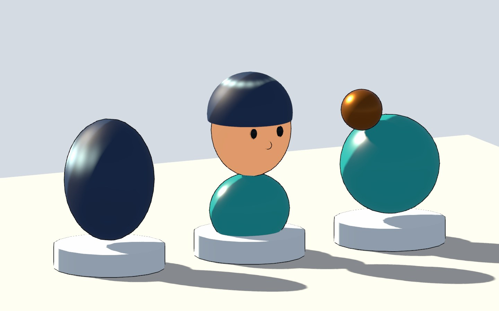

基础 PBR
普通法线、粗糙度、金属度与 AO，结合 URP GGX、SH 环境光和反射探针。
- 完整漫反射 Ramp
- 主光、附加灯与原生阴影
- 基础描边与 Alpha 裁剪
Unity 6.3 · URP 17.3
完整的漫反射 Ramp，基础的角色着色。
把基础 PBR、脸部 SDF 与头发 UV 高光放进同一套清晰的材质流程。用少量参数，从明暗关系开始调整角色外观。
v0.1.0-preview.1 · MIT License

三个材质入口，共享一套基础光照。
普通法线、粗糙度、金属度与 AO，结合 URP GGX、SH 环境光和反射探针。
基于头部前、右、上方向计算受光，提供左右镜像、明暗偏移和柔软度控制。
用贴图控制高光形状，通过 UV 缩放、平移与基础视角位移调整发束表现。
DIFFUSE RAMP
固定 LOD 0 查表，配合区域遮罩、Y 选行与静态 IGN 抖动，让不同部位共用明确的明暗流程。

输入明暗起终点、分级图、原生阴影与 AO
查表固定 Y、Y 贴图、区域遮罩与抖动
颜色曝光、色相、饱和度、对比度、Gamma 与染色
后处理原生 Bloom、Neutral Tonemapping 与颜色调整
通过 Unity Package Manager 导入预览版。
打开 Package Manager，选择 Install package from git URL，粘贴地址。
https://github.com/Gz-beverage/GZtoon-Preview.git#v0.1.0-preview.1
Create → GZtoon Preview，选择 Base、Face 或 Hair，指定底色、材质贴图与 Ramp。
Tools → GZtoon Preview 安装描边。脸部通过 Preview Head Basis 绑定头部 Transform 与 Renderer。
导入 Basic Demo，或创建基础 Volume，在原生 Inspector 中调整 Bloom、曝光和饱和度。
安装、贴图通道、SDF 绑定与示例场景的详细步骤都在仓库 README 中。